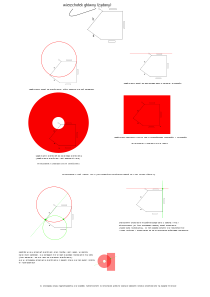

Grafika Komputerowa
Laboratorium 1
Kazimierz Wojciechowski
19.10.2017
Klawiszologia
Zdecydowałem się na obsługę wszystkich zdarzeń z poziomu adaptywnego menu kontekstowego. Grupuje komendy według nazw wielokątów, a następnie według kategorii klikniętego obiektu, czyli wielokąt, wierzchołek lub segment.
Algorytm
Założenia i ograniczenia
Zakładam, że żądane położenie wierzchołka jest możliwe do osiągnięcia. Oznacza to, że model spełni żądanie wytedy i tylko wtedy, gdy nowe położenie idealnie (co do epsilonu) spełnia żądanie oraz nie nagromadziło się dużo błędów numerycznych podczas rozwiązywania.
Z tego względu trudno jest spełnić żądanie dla krawędzi z ograniczeniem w pobliżu usztywnionego wierzchołka.
Pomysł
Nadając żądanie zmiany położenia wierzchołka alogrytm odpowiednio uogólnia pewne pole powierzchni reprezentujące wszystkie możliwe punkty do osiągnięcia. Algorytm uogólnia pole zaczynając od pierścienia o zerowych promieniach i o środku identycznym z żądanym punktem. Następnie algorytm uogólnia pole według reguł:
- Pierścień uogólniony o stałą odległość uogólnia się na pierścień
- Pierścień uogólniony o poziomą/pionową linię uogólnia się na pas
- Pas uogólniony o stałą odległość uogólnia się na pas
- Pas uogólniony o poziomą/pionową linię uogólnia się na pas
Następnie przechodząc kolejno po krawędziach ogołniam pola powierzchni i na bieżąco sprawdzam czy kolejny wierzchołek nie mógłby już zawierać się w dotychczas wyznaczonym polu.
Gdybysmy napotkali wierzchołek sztywny nienależący do pola lub gdybyśmy potrzebowali zmienić (w sumie idąc zgodnie z ruchem wsk. z. oraz przeciwnie do ruchu wsk. z.) więcej niż ile wynosi liczność wierzchołków, to istniałyby wierzchołki którym przypisujemy dwa różne położenia (jedno wyznaczone idąc zgodnie wzgl. ruchu wsk. z. a drugie położenie wyznaczyliśmy idą przeciwnie do ruchu wsk. z.). Ale taka sytuacja nie może mieć rozwiązania.
Wyznaczywszy pierwsze wierzchołki należące do pól wystarczy nastrajać wierzchołki wracając to wierzchołka głównego. Nastrajamy wybierając nabliższy (prawidowy) rzut lub najbliższe przecięcie wcześniejszego pola wraz z polem generowanym przez odpowiedni segment (czyli okrąg lub linia)
W przypadku wieloznaczności możemy wybierać albo punk leżący najbliżej poprzedniego położenia albo np. punk dla którego błąd numeryczny będzie miał najmniejszy moduł (niestety powoduje to niekomfortowy efekt niezdecydowania algorytmu).
Teoretycznie taki proces ma oczywiście rozwiązanie, ale kumulujące się błędy numeryczne czasami prowadzą do rozstrajania się pól i nie można już znaleźć rozwiązania.
Można by temu zaradzić dokonując kilku iteracji metodą Halley'a podczas wyznaczania przecięć.
Chciałbym wzbogacić lakoniczny opis algorytmu chociażby przykładem jego działania:
